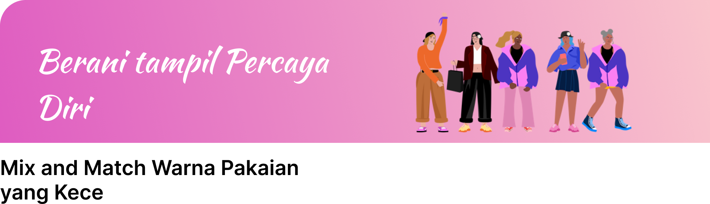

buat postingan

Podcast
Peran Orang Tua
Kupas Tuntas Rencana Diet Sehat Untuk Wanita Dewasa
hellosehat.com
Bagi wanita, diet sehat memberikan Anda energi, mendukung suasana hati Anda, mempertahankan berat badan Anda, dan bisa menjadi dukungan besar untuk melalui tahapan-tahapan yang berbeda dalam hidup. Makanan sehat juga dapat membantu mengurangi penderitaan PMS, meningkatkan kesuburan, memudahkan Anda menjalani masa kehamilan dan menyusui, serta meringankan gejala menopause.
Beauty
Efektif Untuk Penuaan Dini, 9 Fakta Tentang Retinol
Popbela, 11 Maret 2024
Umumnya, vitamin A berasal dari buah dan sayuran. Namun untuk Retinol, kandungan ini berasal dari binatang, tepatnya enzim dari susu atau telur. Retinol sendiri adalah formula topikal yang terbukti secara klinis meningkatkan produksi kolagen dan mengurangi penguraiannya.
Peran Orang Tua
Pentingnya Peran Orang Tua dalam Pendidikan Anak
dr. Fadhli Rizal Makarim 14 Agus 2020
Tak hanya memastikan tumbuh kembang anak berjalan optimal, orangtua juga punya peran penting dalam pendidikan anak. Sebelum masuk ke sekolah formal, orangtua berperan dalam mengajarkan cara berbahasa, berkomunikasi, hingga menghitung sederhana. Lalu, ketika anak sudah masuk usia Sekolah Dasar (SD), peran orangtua tentu lebih banyak lagi.
Peran Orang Tua
Ciri-Ciri dan Dampak Pola Asuh Otoriter Pada Anak
dr. Rizal Fadli 28 Nov 2023
Ada cukup banyak gaya pengasuhan anak yang bisa diterapkan oleh orang tua. Salah satu yang banyak menuai kontroversi adalah pola asuh otoriter. Meski mungkin tujuannya adalah untuk mendidik dan mendisiplinkan anak , tetapi pola asuh ini nyatanya juga punya dampak negatif.
Kesehatan
6 Akibat Pernikahan Dini Untuk Kesehatan Fisik dan Mental Remaja
dr. Rizal Fadli 18 Maret 2024
“Seperti namanya, pernikahan dini merupakan pernikahan yang berlangsung pada pasangan yang belum berusia 19 tahun. Kondisi ini tidak hanya memicu munculnya banyak masalah kesehatan, tetapi juga meningkatkan risiko terjadinya kekerasan dalam rumah tangga, baik fisik maupun seksual.”
Kita Perempuan
WarriorWoman
2024-03-5
"Tidak ada yang bisa menghentikan kita ketika kita bersatu. Mari bersama-sama kita hadapi tantangan dan capai impian kita."
Pendidikan
Sarah22
2024-03-15
"Kadang merasa tertekan dengan ekspektasi sosial terhadap perempuan dalam pendidikan. Bagaimana kita melawannya?."
Mental Health
EveWonder
2024-03-20
"Kenapa sulit ya menjaga motivasi saat kuliah daring? Rasanya semakin kesini semakin berat aja."
Karir
AlexAchiever
2024-03-29
"Mencoba menemukan keseimbangan antara ambisi karir dan kehidupan pribadi tidak mudah. Apakah ada tips untuk hal ini?"
Cinta dan Hubungan
AnaAdmirer
2024-03-21
"Jatuh cinta itu indah, tapi juga menakutkan. Bagaimana caranya menjaga hati tetap utuh saat terlalu banyak terbuka?"
Kita Perempuan
EmpowerHer
2024-03-27
"Menjadi perempuan bukanlah kelemahan, tapi kekuatan. Mari kita hargai satu sama lain dan bangun komunitas."
Kita Perempuan
SoulSister
2024-03-03
"Kita adalah sumber kekuatan satu sama lain. Jangan ragu untuk membangun hubungan yang kuat dan saling mendukung."
Kita Perempuan
SoulSister
2024-03-03
"Kita adalah sumber kekuatan satu sama lain. Jangan ragu untuk membangun hubungan yang kuat dan saling mendukung."
Artikel
Artikel
